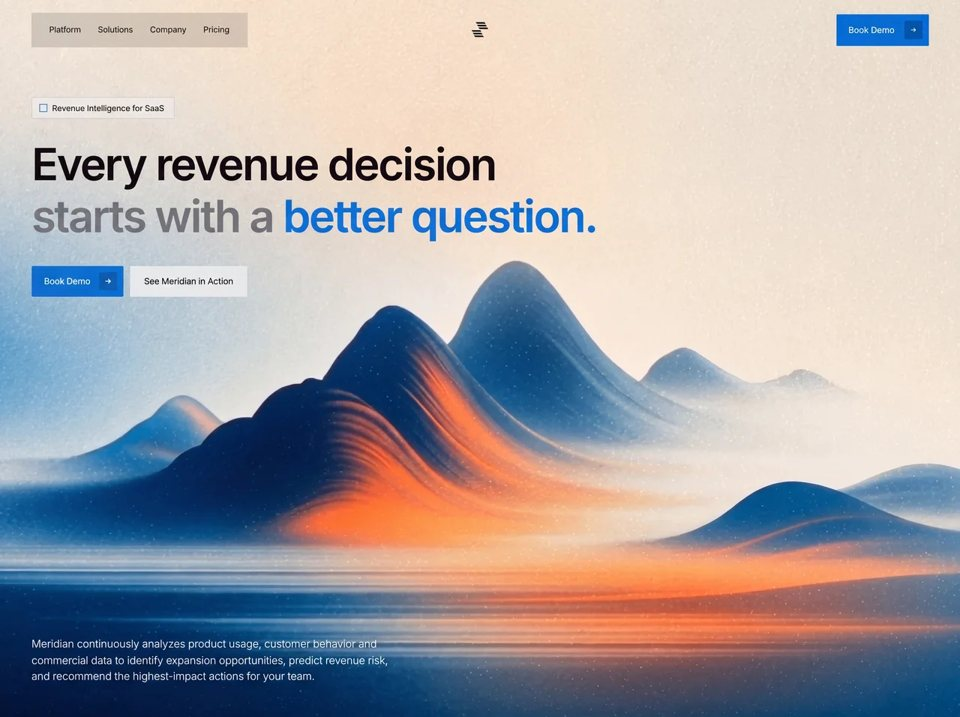

Growth Decisions
SaaSsaasyilai-ai 公开页面
收录时间：2026-08-17正文：11,415 字符

本地预览图 · jpeg
完整提示词
**Recreate this exact single-page SaaS hero. Do not invent extra sections, extra pages, extra images, or extra copy. Implement only what is specified. Stack: one `index.html`, one `styles.css`, one `main.js`. No frameworks.**
### What this page is
A single full-viewport landing hero for **Meridian — Revenue Intelligence for SaaS**. No footer, no extra sections, no scroll on desktop. White page with a full-bleed looping background video of painterly navy/orange mountains. UI is sharp-cornered (radius `0` everywhere). Type is Inter. Layout is a 3-row column: top nav, left-aligned hero, bottom-left lede.
Page title: `Meridian — Revenue Intelligence for SaaS`
`html lang="en"`
`meta viewport width=device-width, initial-scale=1.0`
---
### Exact assets (use these URLs, do not substitute)
**Google Fonts — Inter only, weights 300, 400, 500, 600, 700:**
```
https://fonts.googleapis.com
https://fonts.gstatic.com (preconnect, crossorigin)
https://fonts.googleapis.com/css2?family=Inter:wght@300;400;500;600;700&display=swap
```
**Background video (mandatory CloudFront URL, do not replace):**
```
https://d8j0ntlcm91z4.cloudfront.net/user_38xzZboKViGWJOttwIXH07lWA1P/hf_20260808_075824_7c8a2ef3-826c-43ca-81a1-162429faa306.mp4
```
`<video class="bg-video" autoplay muted loop playsinline>` with one `<source type="video/mp4">`. No poster. No controls.
There are **no other image/video assets**. Logo and arrows are inline SVG.
---
### Design tokens (`:root`)
```
--bg: #ffffff
--text: #0a0a0a
--muted: #1a1a1a
--blue: #006cd2
--blue-dark: #0053a3
--headline-muted: #6b7378
--glass: rgba(0, 0, 0, 0.13)
--glass-blur: 18px
--glass-light: rgba(255, 255, 255, 0.28)
--radius: 0
--font: "Inter", "Helvetica Neue", Helvetica, Arial, sans-serif
--pad-x: clamp(20px, 3.52vw, 64px)
--nav-top: clamp(16px, 2.05vw, 28px)
--btn-icon: 36px
--btn-pad-y: 12px
--btn-pad-x: 22px
```
Global: `box-sizing: border-box`, all margins/paddings 0.
`html, body { height: 100%; overflow: hidden }`
`body`: Inter, `--bg`, `--text`, `-webkit-font-smoothing: antialiased`, `-moz-osx-font-smoothing: grayscale`
Links inherit color, no underline. Buttons inherit font, no border, pointer cursor.
---
### Page shell
`.page` is `position: relative; width: 100%; height: 100vh; height: 100dvh; display: flex; flex-direction: column; overflow: hidden`
Padding: `var(--nav-top) var(--pad-x) clamp(28px, 4.9vw, 48px)`
`.bg` is `position: absolute; inset: 0; z-index: 0; background: #ffffff; pointer-events: none; overflow: hidden`
`.bg-video` is `position: absolute; inset: 0; width: 100%; height: 100%; object-fit: cover`
`.nav`, `.hero`, `.lede`, `.mobile-menu` are `position: relative; z-index: 1`
---
### Header / nav
3-column CSS grid: `1fr auto 1fr`, items vertically centered.
**Left — glass pill of links** (`.nav__links`, `aria-label="Primary"`):
- Links (all `href="#"`): `Platform` · `Solutions` · `Company` · `Pricing`
- Flex row, `gap: clamp(22px, 2.6vw, 32px)`, `justify-self: start`
- Padding `24px 34px`
- Background `var(--glass)`, `backdrop-filter: blur(18px)` (+ `-webkit-`), `border-radius: 0`
- Link type: `clamp(13px, 1.37vw, 15px)`, weight `500`, tracking `-0.01em`, color `#0a0a0a`, `line-height: 1`, nowrap, `padding-bottom: 2px`
- Hover: color `#006cd2`, `translateY(-2px)`, 0.22s `cubic-bezier(0.16, 1, 0.3, 1)`
- Underline bar `::after`: 3px tall, `#006cd2`, `bottom: -6px`, full width, `scaleX(0)` from left, hover `scaleX(1)`, 0.28s same easing
**Center — logo** (`<a class="logo" href="#" aria-label="Meridian">`):
Inline SVG, `viewBox="0 0 42 34"`, rendered width `clamp(30px, 3.2vw, 38px)`, `fill: currentColor` (`#0a0a0a`). Six parallelograms:
```
<polygon points="12,0 30,0 33.2,3.2 15.2,3.2" />
<polygon points="14.6,5.6 32.6,5.6 35.8,8.8 17.8,8.8" />
<polygon points="17.2,11.2 35.2,11.2 38.4,14.4 20.4,14.4" />
<polygon points="3.2,16.8 21.2,16.8 24.4,20 6.4,20" />
<polygon points="5.8,22.4 23.8,22.4 27,25.6 9,25.6" />
<polygon points="8.4,28 26.4,28 29.6,31.2 11.6,31.2" />
```
Hover: `scale(1.1)`, 0.35s `cubic-bezier(0.16, 1, 0.3, 1)`
Each polygon: `transform-box: fill-box; transform-origin: left center`
Entrance `mark-in` 0.5s same easing, `backwards`: from `opacity 0` + `translate3d(-12px, 8px, 0)`
Delays: 0.04 / 0.09 / 0.14 / 0.19 / 0.24 / 0.29s
**Right — nav Book Demo** (`.btn.btn--nav`, `justify-self: end`):
- Label `Book Demo` + 36×36 icon square
- Arrow SVG `viewBox="0 0 20 20"`, path `M4 10h10.2M10.4 5.6 15.2 10l-4.8 4.4`, stroke currentColor, width 1.7, round caps/joins, no fill. CSS sizes the svg to 14×14.
- Background `#006cd2`, text white
- Icon square `#0053a3`, white arrow
- Hover icon: white bg, blue arrow
- Hover wipe `::before` fill `#004a96` (see buttons)
- Entrance: `wipe-right` 0.65s, delay 0.16s, `backwards`
**Burger** (hidden on desktop, shown ≤820px):
- 36×36, 3 bars: 18×1.5px, `#0a0a0a`, gap 5px
- Hover: scale 1.08; bars turn `#006cd2`; first and third bars shrink to 14px
- `aria-label="Open menu"`, `aria-expanded="false"`, `aria-controls="mobile-menu"`
- JS toggles `.is-open`, `aria-expanded`, label Open/Close, and `hidden` on `#mobile-menu`. Escape and any menu link close it. There is **no X-transform CSS** for `.is-open` — bars stay 3 lines.
**Mobile menu** (`#mobile-menu`, `hidden` by default):
- Same 4 links + same Book Demo button
- Column, gap 1.25rem, padding `1.25rem 0 0.5rem`
- Links wrap: padding `16px 20px`, glass bg + 18px blur, column gap 0.9rem, font 1.05rem / 500
Nav link entrance (`link-in` 0.55s, `backwards`): from `opacity 0` + `translate3d(-16px, 0, 0)`
Delays: Platform 0.02s, Solutions 0.08s, Company 0.14s, Pricing 0.2s
Burger uses `link-in` 0.5s delay 0.16s
---
### Buttons (shared)
All `.btn`:
- `inline-flex`, align center, **height 58px**, `border-radius: 0`
- Padding `12px 10px 12px 22px`, gap 18px
- Font 16px / 500 / tracking `-0.015em` / line-height 1 / nowrap
- `::before` absolute inset 0, `scaleX(0)` from left, hover `scaleX(1)`, 0.4s `cubic-bezier(0.16, 1, 0.3, 1)`, `pointer-events: none`
- Label and icon `z-index: 1` above the wipe
**`.btn--nav`:** blue `#006cd2` / white; icon `#0053a3`; wipe `#004a96`
**`.btn--light`:** white bg / `#006cd2` text; icon `#006cd2` with white arrow; wipe `#e8f2fb`
**`.btn--ghost`:** padding `12px 26px` (no icon); color `#0a0a0a`; bg `rgba(255,255,255,0.55)`; blur 24px; wipe `rgba(255,255,255,0.78)` at z-index 0. Hover keeps same 0.55 white + 24px blur.
---
### Hero (left column, not centered)
`.hero { margin-top: clamp(52px, 10.15vh, 92px); max-width: none }`
**Badge** (`.badge.wipe`, `--d: 0.18s`):
- Text exactly: `Revenue Intelligence for SaaS`
- Left: 14×14 white square with `2px solid #006cd2` (empty, no glyph)
- `inline-flex`, gap 10px, height `clamp(34px, 3.6vw, 42px)`, padding `0 18px 0 14px`
- Bg `rgba(255,255,255,0.28)`, `1px solid rgba(0, 108, 210, 0.2)`, blur 18px
- Color `#1a1a1a`, `clamp(13px, 1.35vw, 15px)`, weight 500, tracking `-0.01em`
**Headline** (`h1.headline`):
```
Every revenue decision
starts with a better question.
```
Two masked lines (`.headline__mask` = `display:block; overflow:hidden`):
1. `--d: 0.26s` → `Every revenue decision` — color `#0a0a0a`
2. `--d: 0.4s` → `.headline__line` nowrap:
- `.headline__muted` `starts with a` — color `#6b7378`, weight 600
- `.headline__accent` `better question.` with `data-text="better question."`
Type: `font-size: calc(clamp(2.9rem, 5.9vw, 5rem) + 3px)`, weight 600, line-height 1.18, tracking `-0.038em`
`.headline` margin-top `clamp(22px, 2.8vw, 36px)`
Each `.headline__rise` uses `type-rise` 0.85s `cubic-bezier(0.16, 1, 0.3, 1)` `backwards`, delay `var(--d)`: from `translate3d(0, 118%, 0)` to 0.
**Accent paint-on (critical):**
Base `.headline__accent` is `#6b7378`. Two absolutely stacked copies via `content: attr(data-text)`:
- Soft left-to-right mask:
`linear-gradient(90deg, #000 0%, #000 calc(100% - 72px), transparent 100%)`
start `mask-size: 0% 100%`, no-repeat
- `::before` color `#7eb6ee`, `accent-fill` 1.05s `cubic-bezier(0.4, 0, 0.2, 1)` delay **0.7s** forwards
- `::after` color `#006cd2`, same animation delay **1.08s**
- End state: `mask-size: calc(100% + 72px) 100%`
This is a two-pass wipe: pale blue then brand blue, with a 72px soft leading edge.
**Actions** (flex, gap 12px, margin-top `clamp(28px, 3.4vw, 42px)`):
1. `.btn.btn--light.wipe` `--d: 0.56s` — `Book Demo` + same arrow icon
2. `.btn.btn--ghost.wipe` `--d: 0.66s` — `See Meridian in Action` (no icon)
`.wipe` = `wipe-left` 0.7s `cubic-bezier(0.16, 1, 0.3, 1)` `backwards`: `clip-path: inset(0 100% 0 0)` → `inset(0 0 0 0)`
---
### Bottom lede
Pinned with `margin-top: auto`, max-width **700px**, overflow hidden.
Color **`#ffffff`** (sits on the dark mountain).
`clamp(17px, 1.8vw, 20px)`, weight **300**, line-height 1.5, tracking `-0.01em`
Exact copy:
> Meridian continuously analyzes product usage, customer behavior and commercial data to identify expansion opportunities, predict revenue risk, and recommend the highest-impact actions for your team.
Inner `.lede__rise` `--d: 0.78s` uses `type-rise` 0.9s same easing `backwards`.
---
### Animation timeline (page load)
| t | what |
|---|---|
| 0.02s | Platform slides in from left |
| 0.04–0.29s | 6 logo bars stagger in from down-left |
| 0.08 / 0.14 / 0.20s | Solutions / Company / Pricing |
| 0.16s | Book Demo wipes in from the right; burger fades in |
| 0.18s | Badge wipes left→right |
| 0.26s | Line 1 rises from below mask |
| 0.40s | Line 2 rises |
| 0.56s | Light Book Demo wipes in |
| 0.66s | Ghost button wipes in |
| 0.70s | Pale-blue `#7eb6ee` starts filling “better question.” |
| 0.78s | Lede rises |
| 1.08s | Brand blue `#006cd2` overpaints the accent |
All entrance animations use `animation-fill-mode: backwards`.
**`prefers-reduced-motion: reduce`:** kill every listed animation; restore opacity/transform/clip-path; accent becomes solid `#006cd2` and `::before/::after` `content: none`.
---
### Responsive
**≤820px:**
- `html, body { overflow: auto }`
- `.page` height auto, `min-height: 100vh / 100dvh`
- Hide `.nav__links` and desktop `.btn--nav`
- Nav grid `auto 1fr auto`; logo `justify-self: start`; show burger
- Show `.mobile-menu` as flex column (still hidden via `[hidden]{display:none}`)
- Hero margin-top 48px
- Headline `calc(clamp(2.75rem, 10vw, 3.85rem) + 3px)`
- Actions wrap
- Lede width 100%, max 700px, margin-top 64px
**`max-height: 700px` and `min-width: 821px`:**
- Hero margin-top 36px
- Headline `calc(clamp(2.75rem, 7.2vh, 4.15rem) + 3px)`
---
### JS (`main.js`)
IIFE only. Query `.nav__burger` and `#mobile-menu`. Toggle open/closed as specified. No other JS. No video JS. No scroll libraries. No analytics.
---
### Do not
- Do not add more pages, sections, cards, testimonials, pricing tables, or a footer
- Do not round corners
- Do not swap Inter for another font
- Do not change the CloudFront mp4 URL
- Do not center the hero
- Do not make the lede dark text
- Do not add a poster image or grain overlay (grain is in the video)
- Do not use a different logo
- Do not add burger-to-X animation unless already specified (it is not)
Match this 1:1.把上面的提示词完整复制到支持长文本的 AI 工具中，再按需要替换品牌名、配色与文案。提示词描述的是整页结构与动效节奏，生成后建议在真实浏览器里检查首屏加载和移动端表现。
来源与版权
该条目来自公开提示词页面，原始出处信息未随页面提供。
提示词文本与预览素材的版权归原作者或原平台所有，本站仅作索引与归档。若你是权利人并希望移除本条内容，请通过联系方式告知。